Para quem vai dar aula
Seis arquivos em PDF, 154 páginas prontas para imprimir, encadernar e levar para a sala. As capas, as fichas e os certificados você personaliza no Canva com a sua marca.
Atendendo, você é paga por uma cliente de cada vez. Numa turma, as mesmas horas são pagas por cada aluna, no preço que você decidir.
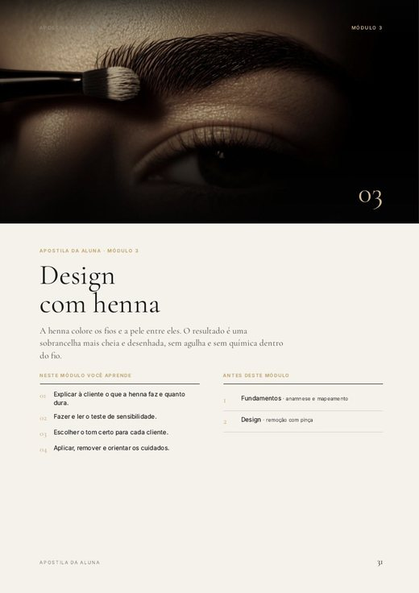
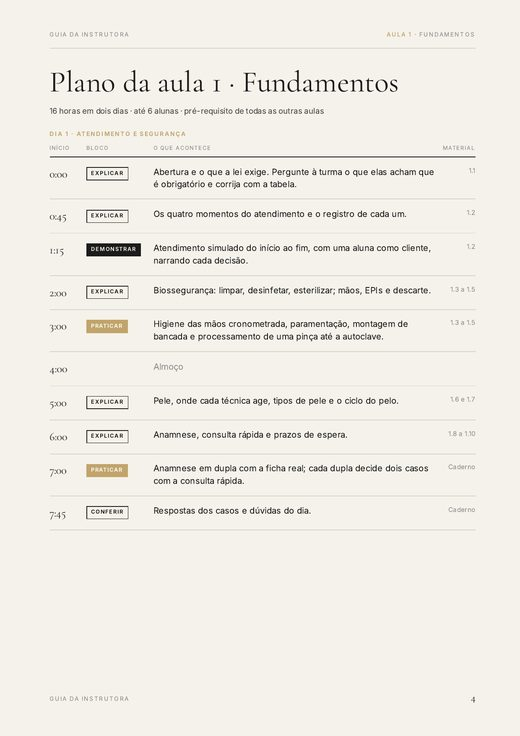
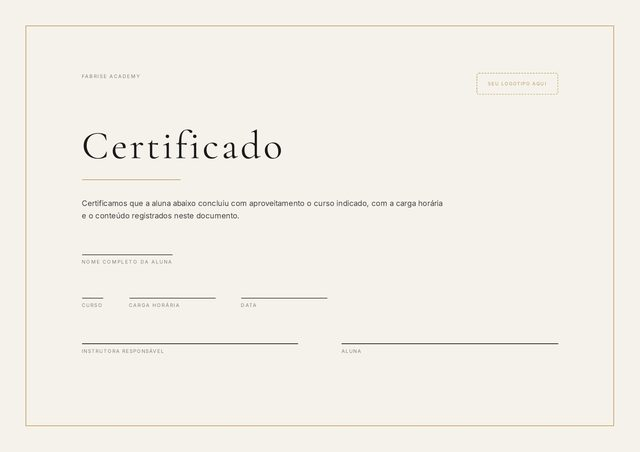
Dar aula é o caminho mais direto para faturar sem colocar mais horas na cadeira. Quase toda profissional de sobrancelhas já pensou nisso, e o que trava raramente é a técnica.
Você pensa em marcar uma data e para na primeira pergunta: quantas horas tem o curso? Quantos dias? Quanto cobrar?
Você faz a henna de olhos fechados. Mas o que a aluna faz nas horas em que você não está falando?
No fim, ela pede o certificado. E vem junto a pilha de papel que ninguém te ensinou a fazer: ficha, termo, avaliação.
O que falta não é técnica. É o plano de aula, a apostila e o certificado, nessa ordem.
Os cinco módulos se combinam em cinco cursos, de 25 a 57 horas. O plano de cada aula já está escrito, hora a hora.
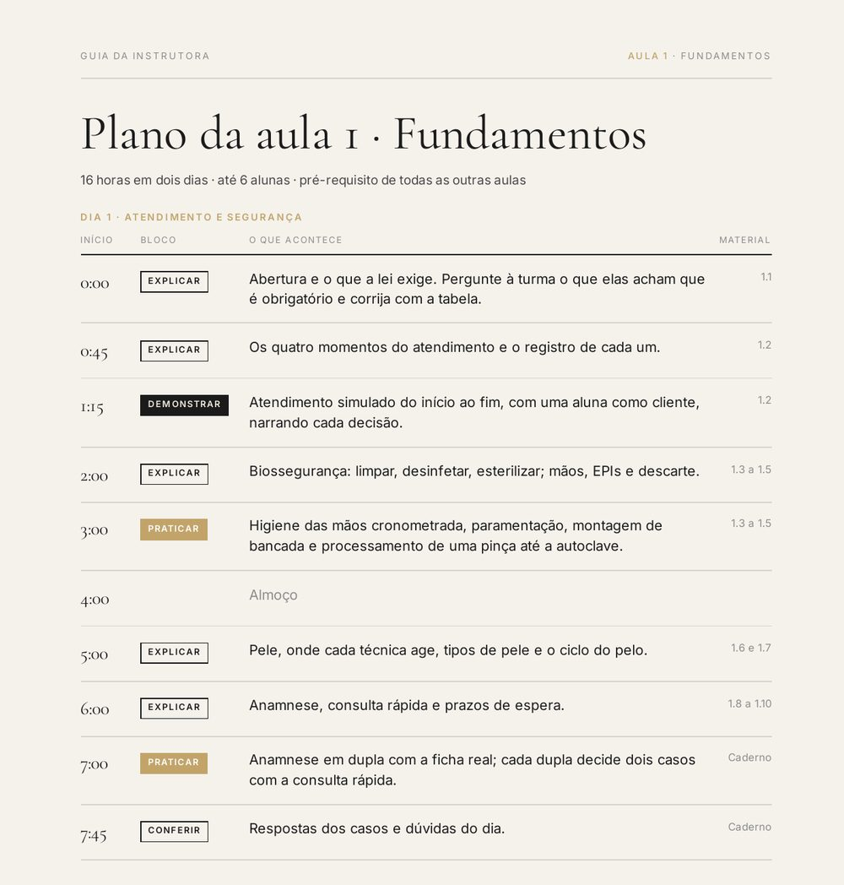
Escolha um dos cinco e marque a data. O Guia impresso traz a aula inteira hora a hora: o que acontece às 0:00, às 3:00, no almoço e às 7:45.
Mapeamento, traçado, simetria, leitura do fio, degradê por camadas. É o que a aluna faz de caneta na mão. O gabarito de todas fica no seu Guia, não no caderno dela.
Anamnese, termo de consentimento, ficha técnica, checklist, orientações de pós e dez modelos de certificado. As normas citadas no material vêm com artigo e data de conferência. Nada para você redigir na véspera da aula.
O que fica na sua mão, o que vai para a mão da aluna e o que a cliente dela assina. As 154 páginas se dividem assim.
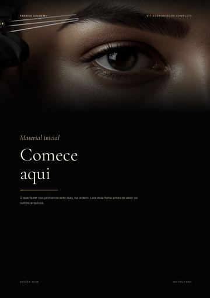
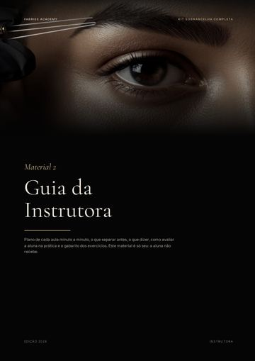
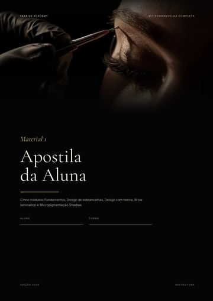
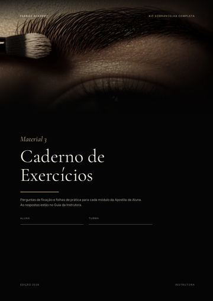
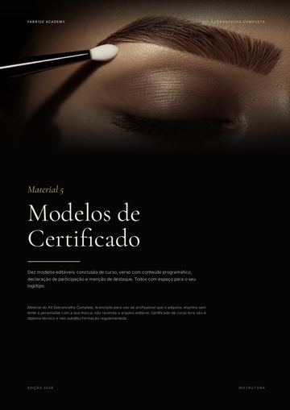
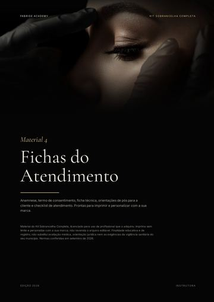
Você abre no Canva, troca o logotipo e o nome pelos seus, e imprime.
O que está aí é o material. O que ele vira é uma turma com data, carga horária e certificado no fim. São 154 páginas em PDF: quem imprime é você, e é por isso que cabe em R$47.
Toda turma começa igual, com fundamentos e design. O que muda é a técnica que você escolhe ensinar depois, e cada escolha já tem o plano de aula hora a hora no Guia da Instrutora.
O nome do curso e a carga horária que você imprime no certificado saem daí. As três técnicas vêm nos mesmos seis arquivos, pelo mesmo R$47: brow lamination e micropigmentação têm módulo na apostila e plano de aula próprio, como a henna.
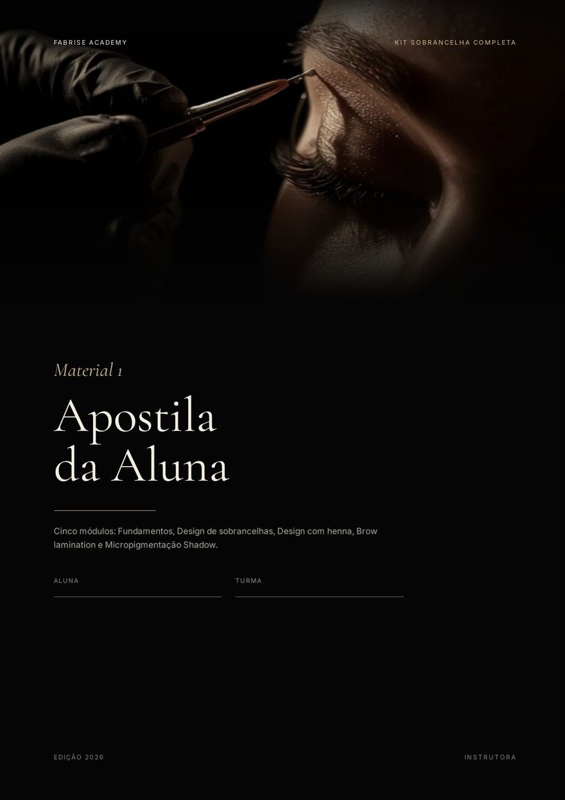
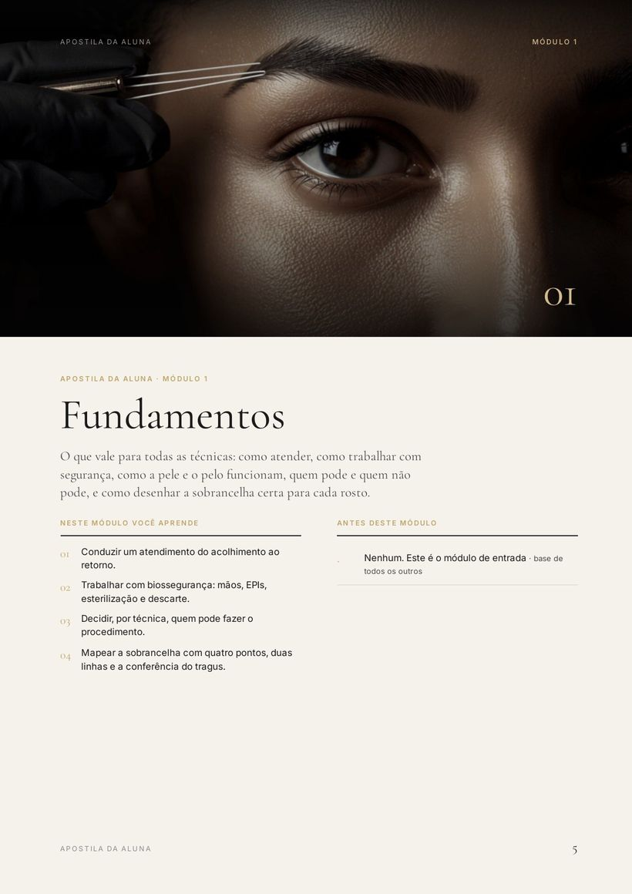
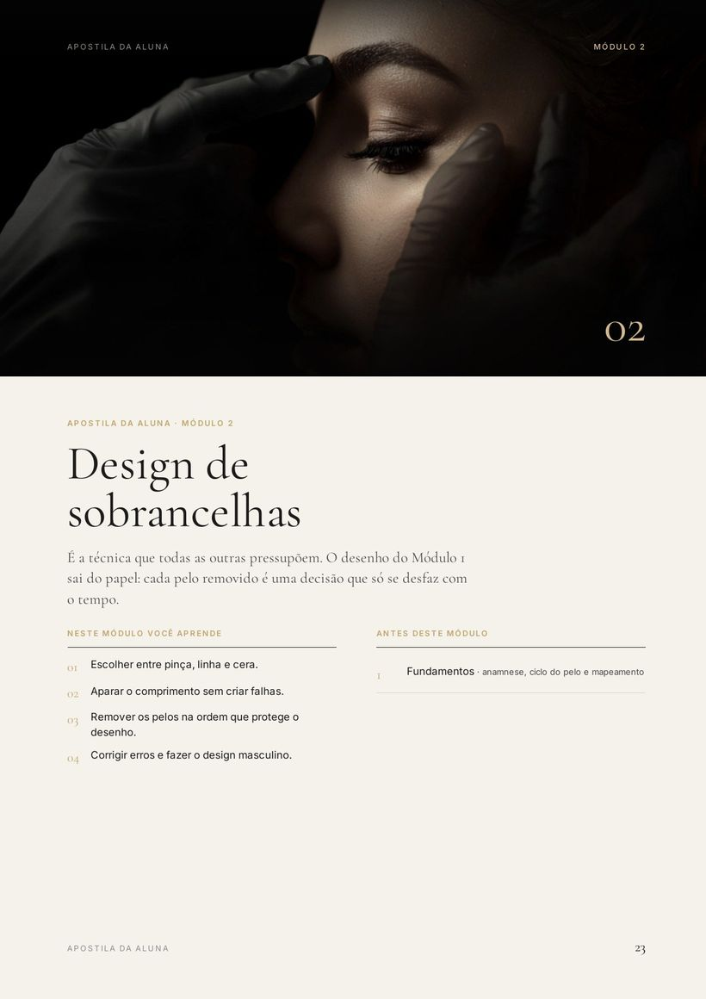
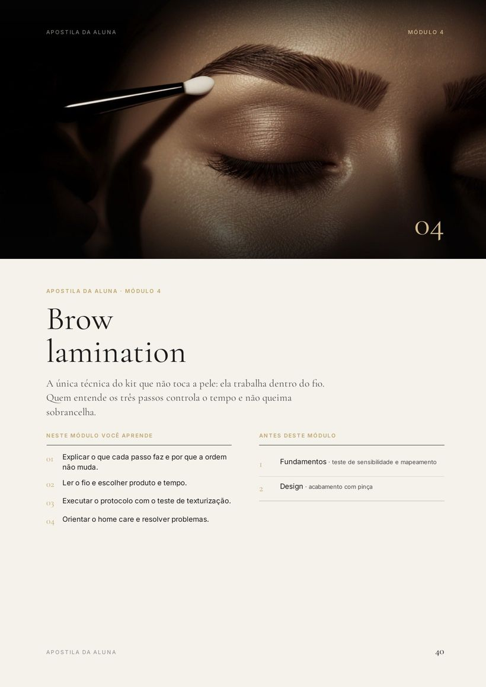
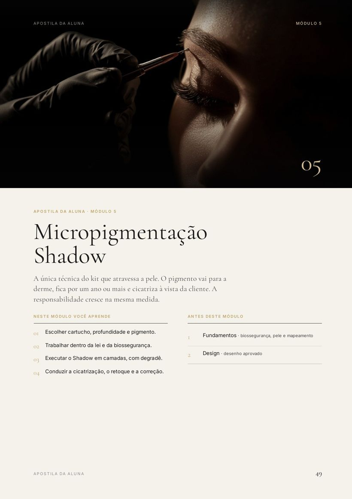
Uma página de cada mão: a sua, a da aluna e a da cliente dela, do jeito que saem da impressora.
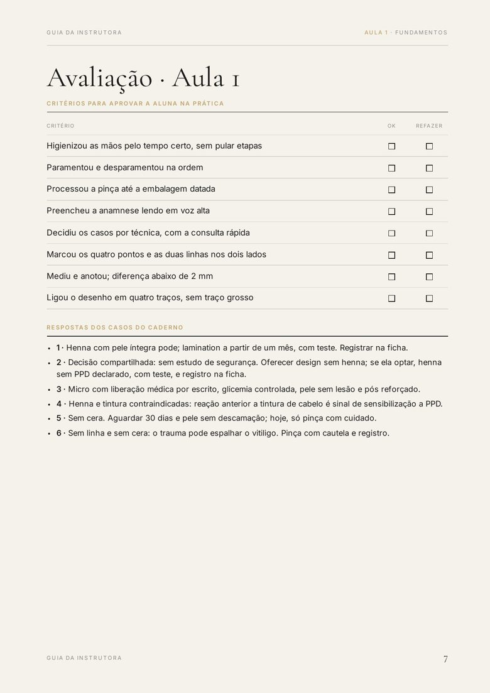
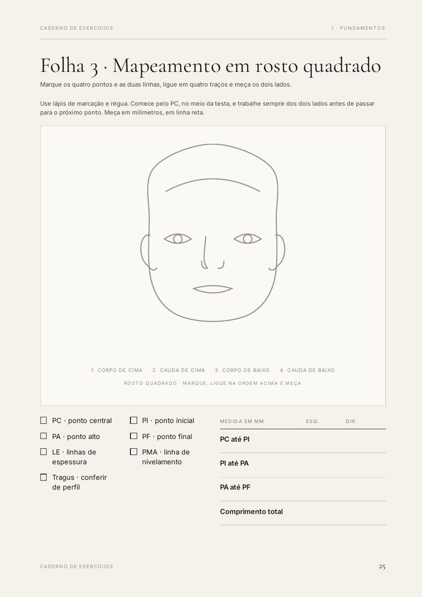
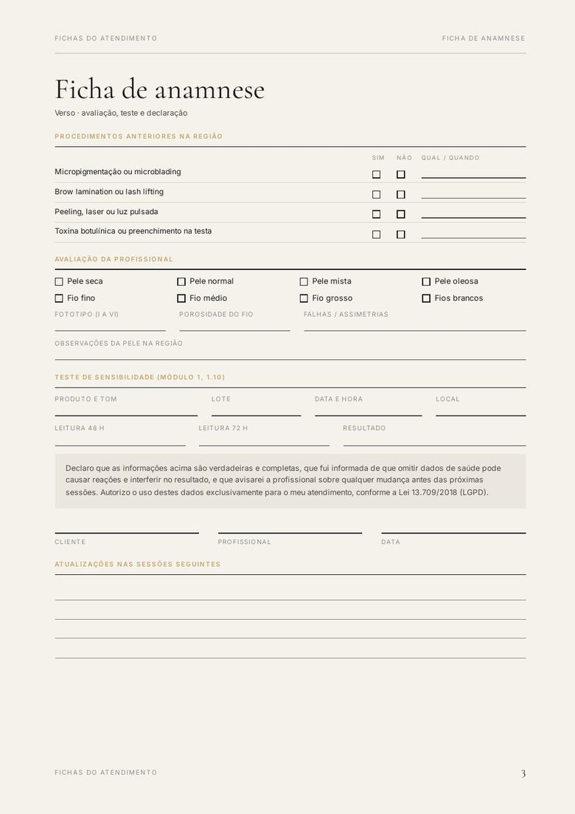
Pagamento único, sem mensalidade e sem renovação.
Escrever um plano de aula hora a hora para cinco cursos é trabalho de semanas. Ele já está escrito.
Compare com o que você cobra por um atendimento.
no Pix ou no cartão, em até 6x
Quero dar o meu curso · R$47Sete dias de garantia. Abra tudo, imprima uma folha e decida. Se não for o que você esperava, peça o reembolso e recebe o valor de volta.
Download imediato na área de membros. São arquivos digitais em PDF: nada é enviado pelo correio.
Especialista na técnica Shadow e em micropigmentação de lábios, com estúdio em São Paulo.
Ela atende no estúdio dela e dá cursos presenciais. O Curso na Pasta leva o nome dela e nasceu de uma pergunta prática: o que uma profissional precisa ter em mãos para abrir a própria turma sem improvisar.
O conteúdo não foi escrito de memória. Cada norma citada no kit vem com artigo e data de conferência, as fontes estão listadas nas duas últimas páginas do Guia da Instrutora, e onde as referências divergem o material diz que divergem e adota a recomendação mais cautelosa.
@fabrise_pmu · São Paulo
Dois arquivos levam a sua marca: as capas com as fichas, e os certificados. São duas trocas, um logotipo e um nome. Os outros seis saem prontos de propósito. O que está neles é conteúdo técnico com fonte e data de conferência, e material em que tudo é editável é material que você precisa revisar inteiro antes de entregar para a sua aluna.
É exatamente para isso que existe o Guia da Instrutora. Você não precisa inventar a estrutura da aula: ela está escrita hora a hora, com o que dizer em cada bloco e como avaliar no fim. E a folha “Comece aqui” diz o que fazer nos primeiros sete dias, na ordem.
Não tem, e é de propósito. O que você recebe é o material que vai para a mão da sua aluna. Se a promessa fosse te ensinar a técnica, seria vídeo. A promessa é outra: entregar o curso montado para você ensinar o que já sabe fazer.
Só para dois arquivos, e só se você quiser a sua marca neles. Os outros seis você baixa e manda para a impressora. O passo a passo de como abrir no Canva vem na primeira página de cada arquivo editável.
Pode imprimir quantas vezes quiser, para quantas turmas quiser, sem pagar de novo. O que não pode é revender os arquivos ou repassá-los a outra profissional.
Não. Você imprime a trilha que vai dar. A folha “Comece aqui” traz o intervalo de páginas de cada módulo e a lista do que imprimir por aluna.
Serve. O curso mais curto é fundamentos e design, com 25 horas, e com henna vai para 32. Brow lamination e micropigmentação ficam ali para o dia em que você quiser abrir uma turma nova, sem comprar nada de novo.
A folha “Comece aqui” organiza isso em sete dias, na ordem, com o tempo de cada passo: ler o Guia da Instrutora no dia 1, cerca de uma hora, escolher a trilha e a data em quinze minutos, pôr a sua marca nos dois arquivos editáveis no dia 2, cerca de quarenta minutos, e imprimir no dia 3. Você não precisa ler as 154 páginas antes de dar aula.
No momento em que o pagamento é aprovado você recebe acesso à área de membros, com os seis PDFs e os dois arquivos editáveis para baixar.
Pode. O preço da sua turma é decisão sua, e o material não impõe nenhuma regra sobre isso.
Ele declara a carga horária e o conteúdo do curso que você deu, com o seu nome e a sua marca. É certificado de curso livre: não é diploma técnico e não substitui formação regulamentada.
Você tem sete dias para abrir tudo e decidir. Se não servir, peça o reembolso e recebe o valor de volta.
Você já sabe fazer. O que faltava era o material: a apostila da aluna, o plano de aula hora a hora, as folhas de treino, as fichas e o certificado. São 154 páginas e dois arquivos para pôr a sua marca, por R$47, uma vez.
Quero dar o meu curso · R$47P.S. Esta é a primeira edição do kit. Quem compra agora recebe as atualizações do material sem pagar de novo. E se não for o que você esperava, são sete dias para pedir o reembolso pela própria Kiwify.